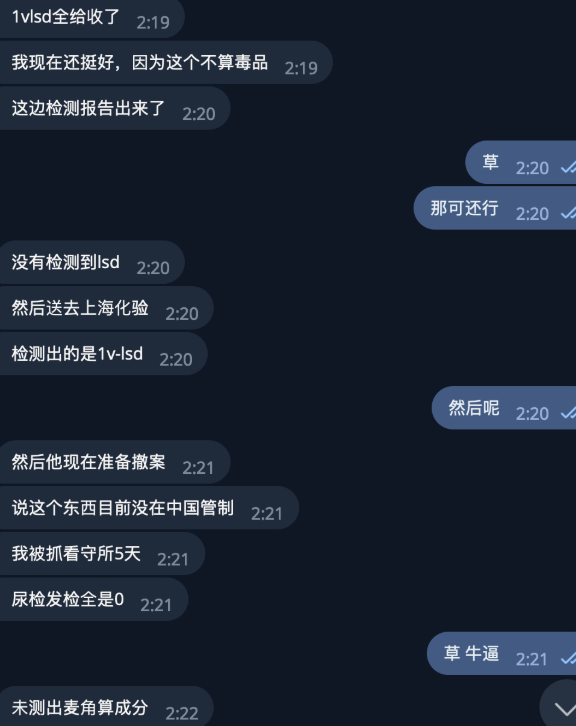

xx1012000456
@xx1012000456
@jpdrugdealer 可以，没问题，1V删掉可以解释为国内列管怕误导新人，建议荷兰发货那篇也删了毕竟1v1p都列管了。这篇算是官方给你的老产品打了谱。你需要解释的重点是为什么会有甲基苯丙胺阳性，因为这不是国内执法是否规范的问题了，意味着你的产品接收、使用都有高风险。

Japan Drug Dealer
@jpdrugdealer
你说的是这件事是1V该商品我们至少2年前就已经停售了
原因违反本店运营国家（日本）法律 https://t.co/luE42Bppkg https://t.co/apeydIEaF0